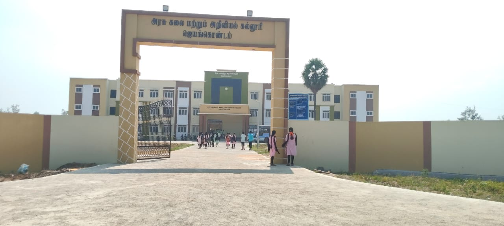
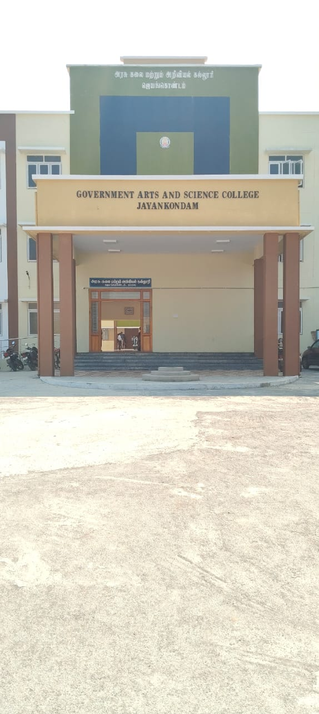
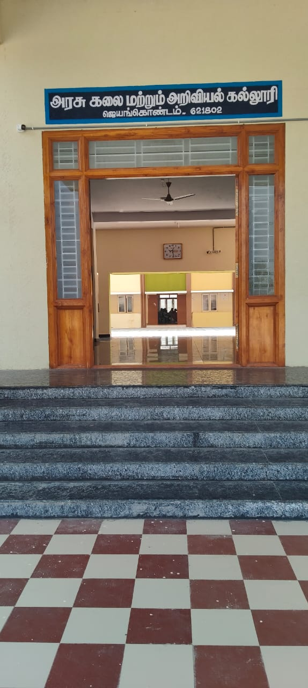
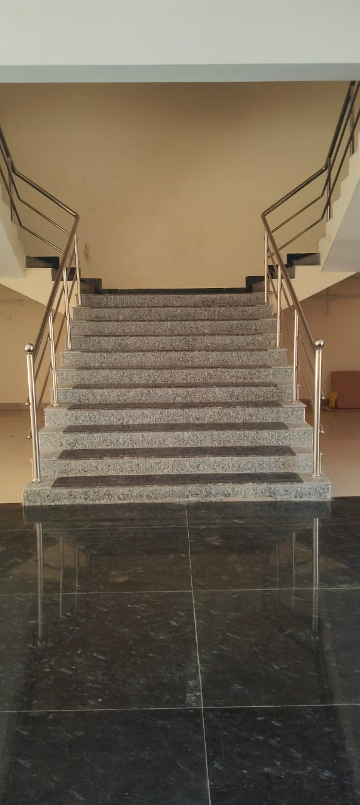
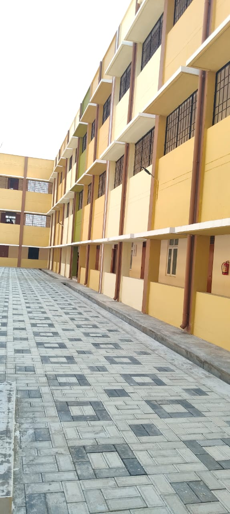
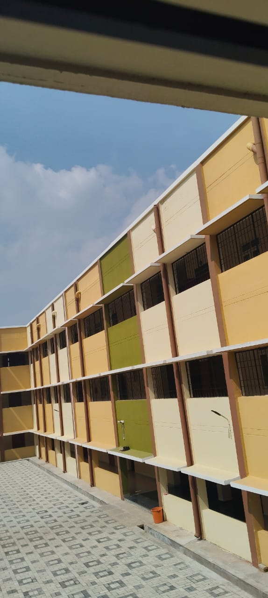

Welcome to Our College
Our institution provides quality education and excellence in Arts and Science with modern infrastructure.
About University
Our college was established to give knowledge, skills, and discipline to students.
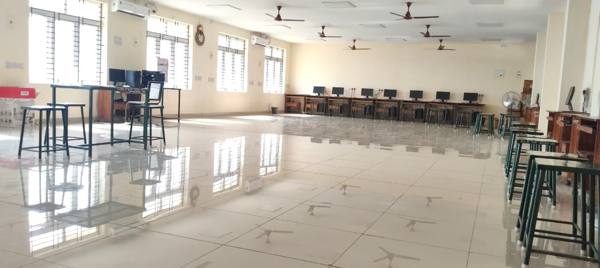
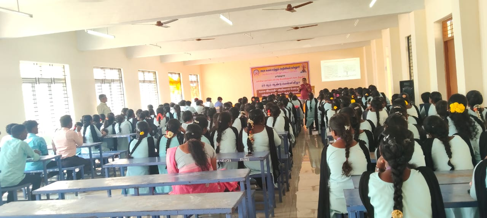
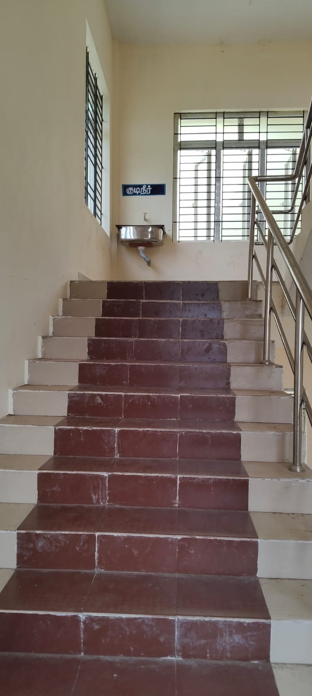
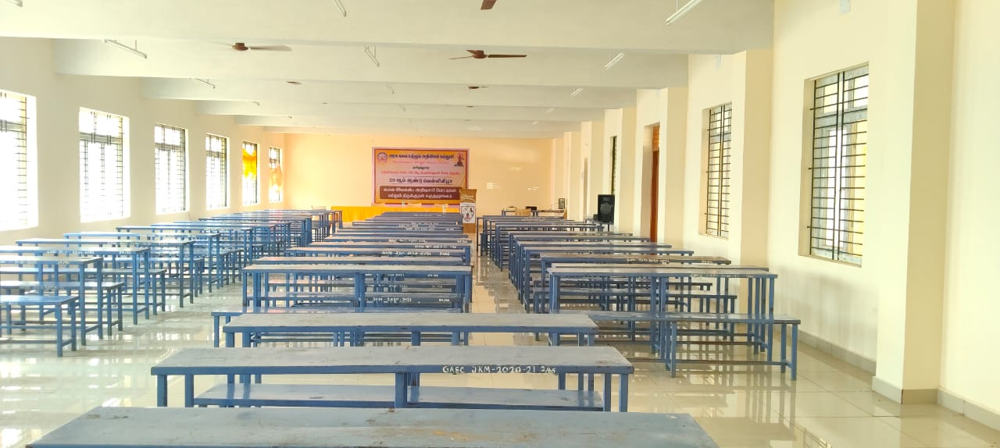
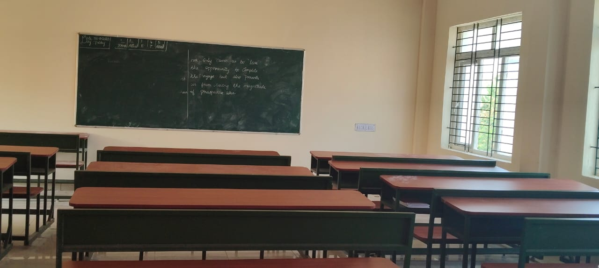
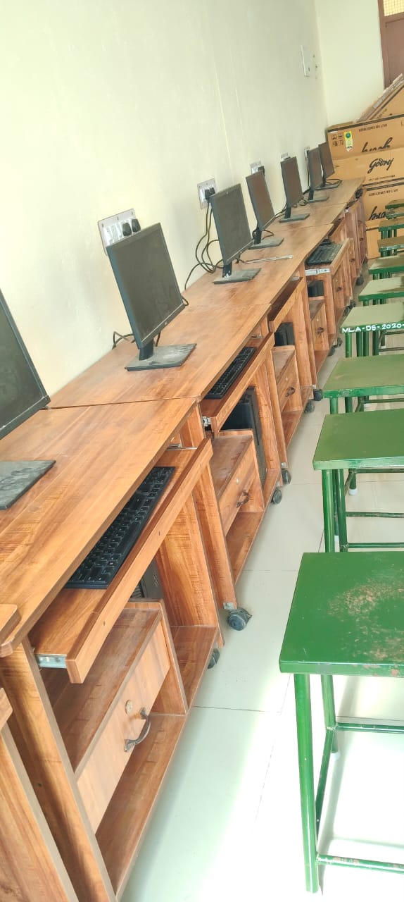


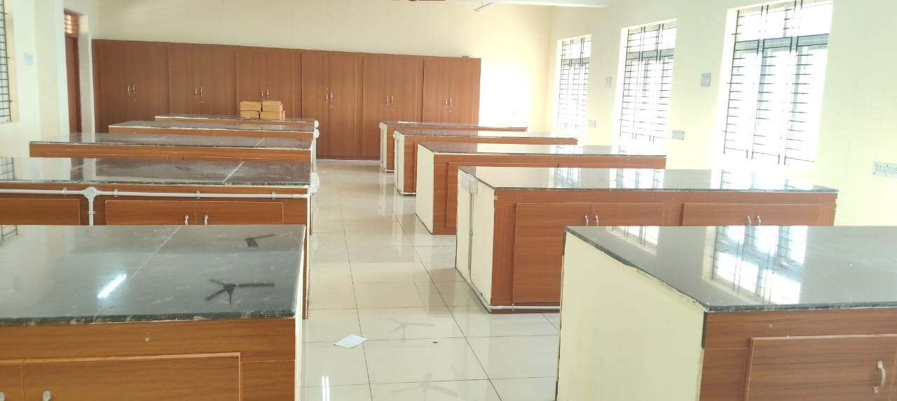
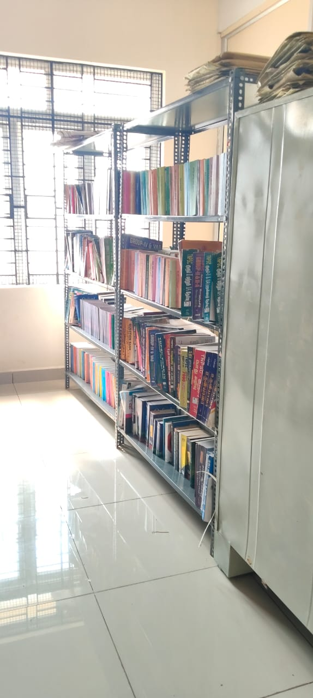
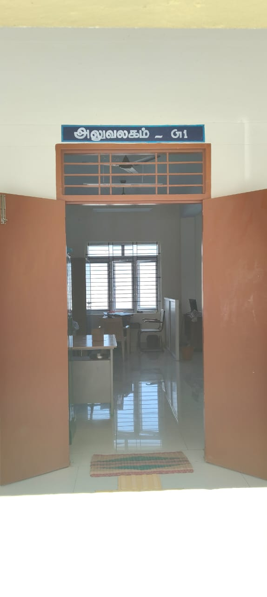
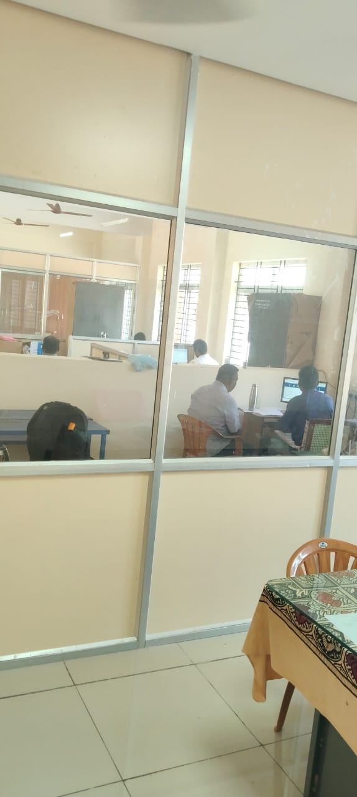
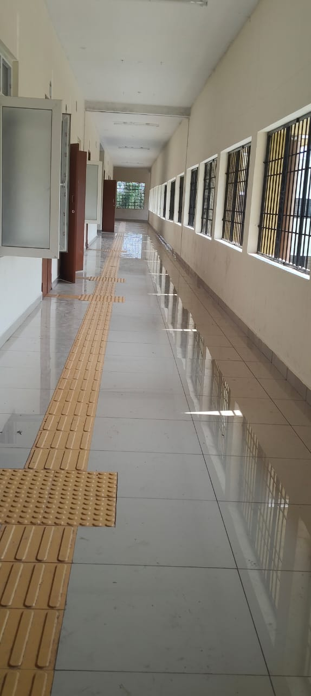
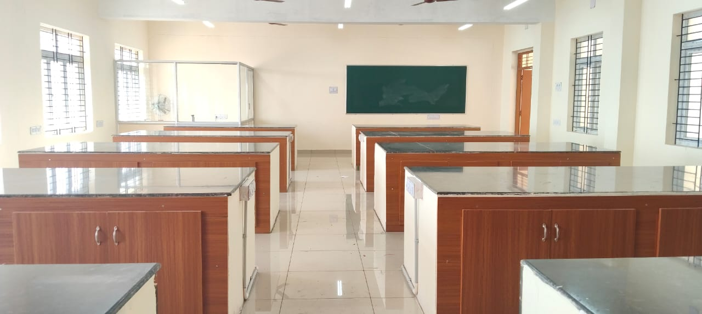
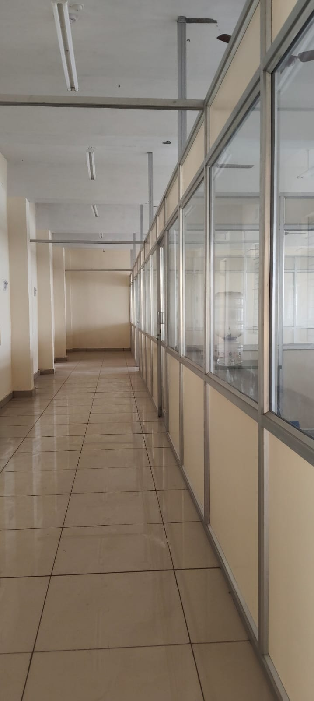
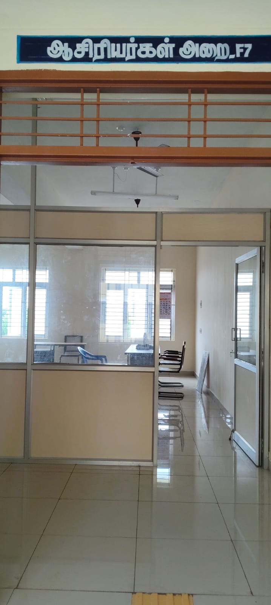
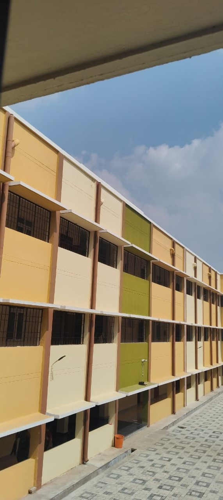
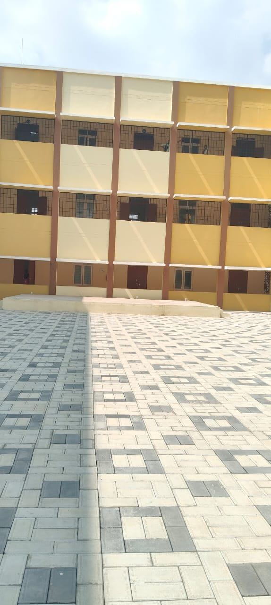
History of Government Arts and Science College, Jayankondam
The Government Arts and Science College, Jayankondam, was established in the year 2020 with the objective of providing quality higher education to students from rural and economically weaker sections of society.
The establishment of this college was announced by the then Hon’ble Chief Minister of Tamil Nadu, Thiru Edappadi K. Palaniswami, under Rule 110 of the Tamil Nadu Legislative Assembly on 20.03.2020, along with the announcement of seven new colleges across the state to improve access to higher education for rural students.
.Following this announcement, on 14th September 2020, Dr. M. Rajamoorthy, Associate Professor, Department of Physics, was appointed as the Teacher-in-Charge to oversee the initial administrative work and admission process. The college commenced its functioning temporarily at the Government Girls High School, Jayankondam.
Initially, undergraduate programmes in Tamil, English, Mathematics, Computer Science, and Commerce were introduced. Applications for first-year admissions were received on 30.09.2020 under the leadership of the Jayankondam MLA Thiru Rama Jayalingam, in the presence of the then District Collector Smt. Rathna.
The admission process was conducted from 12.10.2020, and all 260 seats were filled in the very first academic year. Due to the COVID-19 pandemic, classes commenced in online mode from 01.10.2020.
Subsequently, Dr. M. Rajamoorthy was appointed as the Principal with full additional charge, and classes continued at the Government Girls High School, Jayankondam.
On 31.12.2020, Bharathidasan University formally granted temporary affiliation to the college. Later, on 17.11.2021, the Government appointed Dr. R. Kalaiselvi as the Principal of the institution.
From the academic year 2025–2026, the Government has sanctioned Cycle II courses in Tamil, Commerce, and Computer Science. At present, the student enrolment in the first year has increased to 480. Due to space constraints, classes are being conducted on a rotational basis.
As per the directions of the present MLA Thiru K.S.K. Kannan, a permanent campus for the college is under construction on 4.5 acres of Government land near Chinnavalayam, along with 2.33 acres of protected forest land. The construction is expected to be completed during the academic year 2025–2026, after which the college will function from its permanent location.
“What you do today determines who you are tomorrow.”
History of the Institution
The college was officially established and commenced its academic activities on 12th November 2025 at Pudusavadi. The institution was founded with the vision of providing quality higher education and empowering students with academic excellence, discipline, and social responsibility.
Since its inception, the college has been steadily developing its infrastructure, academic departments, and student support facilities to meet modern educational standards.
At present, the institution functions under the leadership of Principal Mr. Rajamoorthy, who assumed charge in May 2025.

Principal – Profile
Dr. M. Rajamoorthy, M.Sc., M.Phil., B.Ed., Ph.D.
Principal – FAC
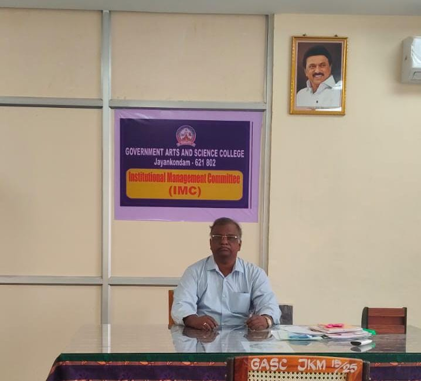
Our Principal has been a driving force behind the institution’s growth, fostering academic excellence and a strong culture of discipline among students.
Dr. M. Rajamoorthy is a distinguished academician and experienced administrator, currently serving as the Principal (Full Additional Charge) of Government Arts and Science College, Jayankondam. With postgraduate and doctoral qualifications in Physics, he has played a key role in the establishment and growth of the institution since September 2020. He was instrumental in launching major undergraduate programmes and ensuring uninterrupted academic activities during the COVID-19 period. Under his leadership, the college secured temporary affiliation from Bharathidasan University and continues to focus on academic excellence, discipline, and student welfare, especially for rural and first-generation learners.
Departments
- BSC.Computer Science
- BA.TAMIL
- BA.ENGLISH
- BSC.MATHS
- B.COM
Students
Student details, admission information, examination and results can be managed through this system.
Faculty
Our university has experienced and qualified faculty members to guide students.
Contact Us
Address: Pudhusavadi ,Jayankondam – 621 802.
Email: gasjayankondam@gmail.com
Phone: +91 9442359395